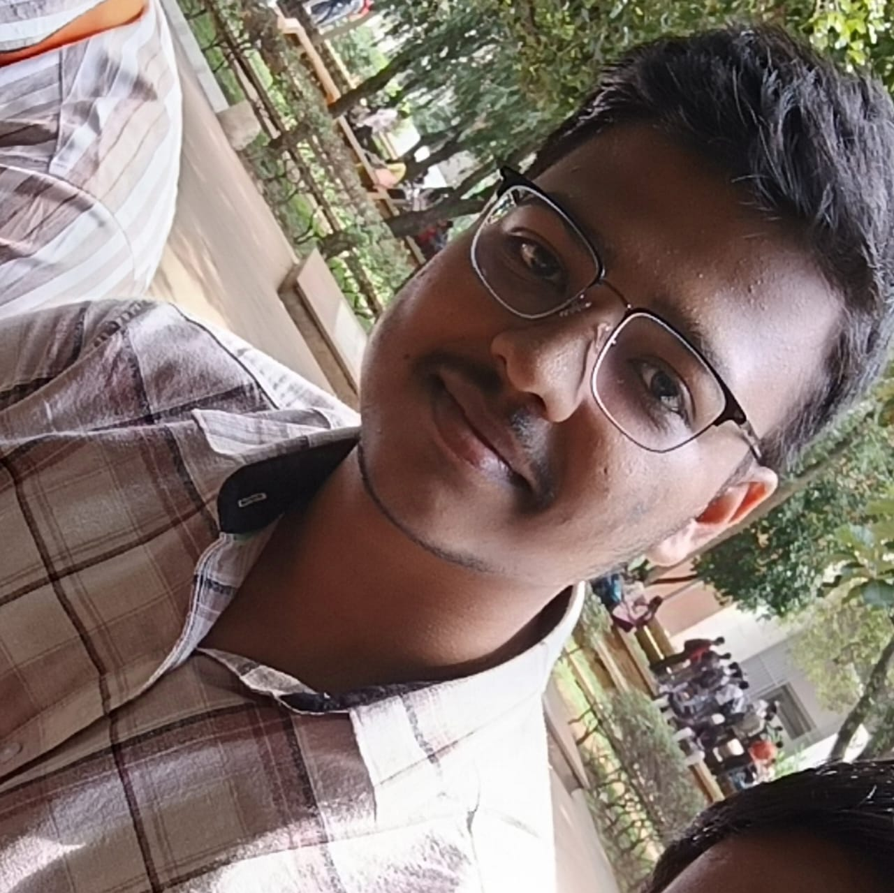
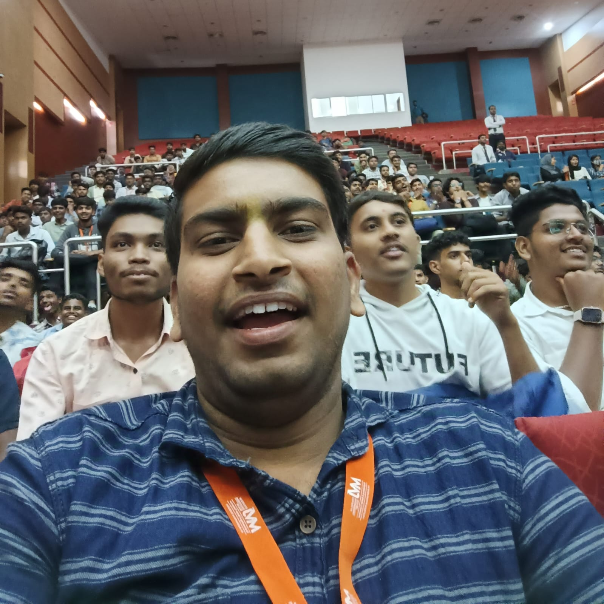
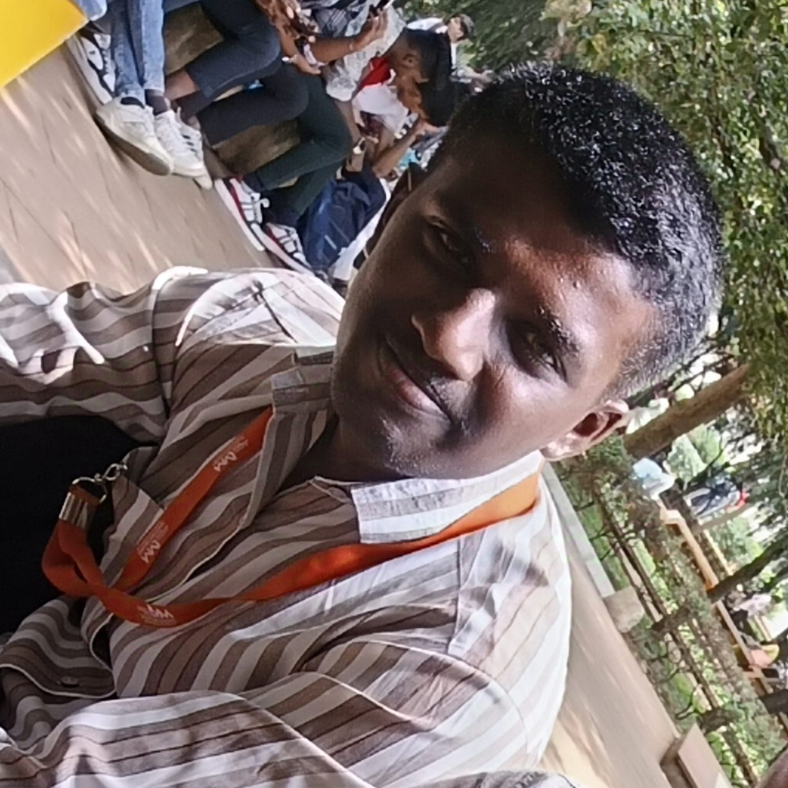

“A best friend is someone
who makes you laugh even
when you think you’ll never smile again.”

Member 01
Manoj
Creator of this webpage from
Physics Dept,ISE Branch
Member 02
Ritesh
Friend 02 from
Mathematics Dept,ECE Branch
Member 03
Chetan
Friend 03 from
Mathematics Dept,ECE Branch